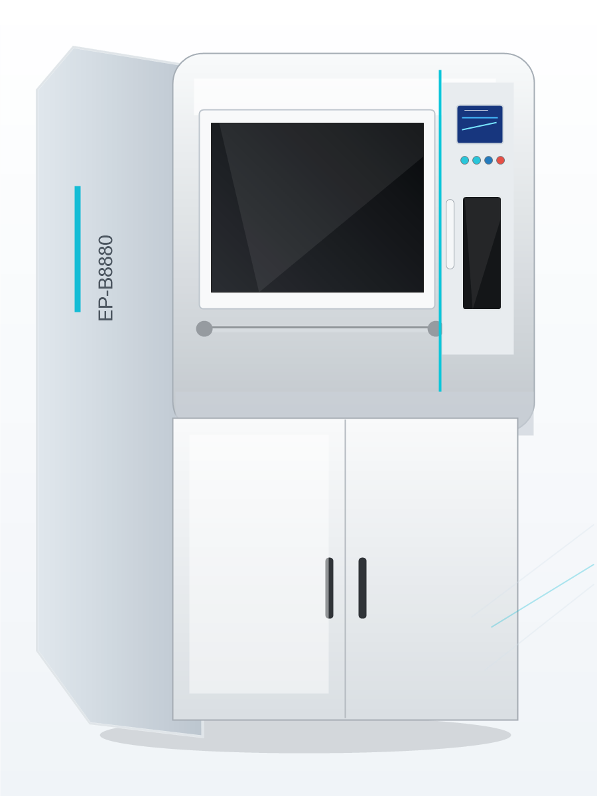

为生命科学创新赋能，实现复杂组织器官精准打印

EP-B8880生物3D打印机是针对生命科学研究与组织工程应用开发的高精度增材制造设备，融合了先进的多喷头挤出控制技术、无菌环境控制系统与生物相容性材料适配体系，能够满足从实验室基础研究到临床前组织模型制备的多样化需求。支持多种生物墨水的协同成型，为药物筛选、疾病模型构建、再生医学研究提供一体化的解决方案。
搭载四通道独立控制挤出喷头，运动精度可达1μm，能够制造复杂孔隙结构的组织支架，满足细胞生长的空间排布需求。喷头支持快速换料与温度精准调控，适配从水凝胶到高分子聚合物的多种生物材料。
集成紫外灭菌、温湿度在线监测、照明与急停装置，并配置H14级高效过滤器，可有效维持舱内无菌洁净环境，满足生命科学研究对实验环境的使用要求。
支持胶原、明胶、海藻酸钠、壳聚糖等天然生物材料，PLGA、PCL、PEG等合成高分子材料，以及复合细胞负载墨水，可实现不同材料的分层共打印。
配套专属生物3D打印切片软件，支持STL直接导入，自定义参数一键生成打印路径，操作界面简洁直观，无需专业编程经验即可快速上手。
| 参数项目 | 规格指标 |
|---|---|
| 通道数量 | 4通道 |
| 文件格式 | STL、GCODE |
| 输入电压 | AC 220V/50Hz |
可打印具有复杂孔隙结构的组织工程支架，负载种子细胞后用于骨、软骨、皮肤等组织的修复研究，支持大尺寸支架的稳定成型，满足动物实验与临床前研究的需求。
构建仿生三维肿瘤模型、肝脏微组织模型，模拟人体组织的微环境，用于药物毒性测试与药效筛选，相比传统二维细胞培养模型，能够更准确地反映药物在体内的作用效果，降低药物研发的失败率。
构建生理或病理组织模型，用于发育生物学、疾病发生机制的研究，可实现不同细胞类型的精准空间排布，研究细胞间相互作用与微环境影响。
打印可降解手术植入物、个性化修复补片，根据患者影像学数据定制形态与结构，适配不同患者的解剖结构需求，提高植入手术的适配性与治疗效果。
打印个性化牙修复支架、牙龈替代材料，配合口腔扫描数据实现精准定制，满足口腔修复与再生研究的需求。